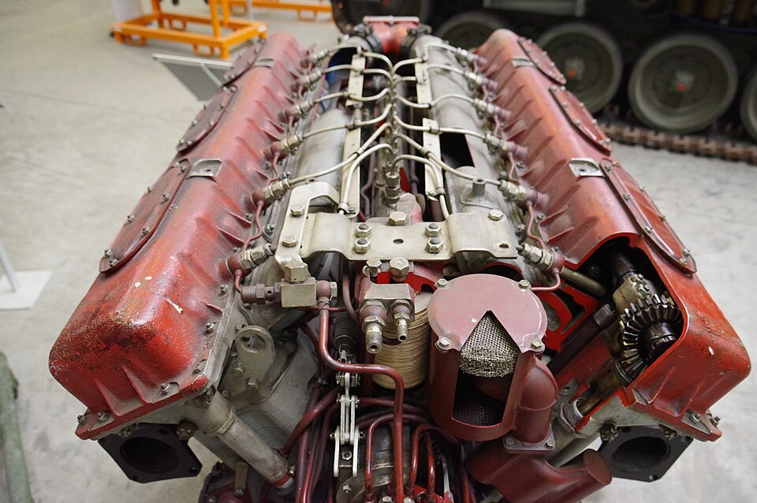

Двигун В-46: ремонт та обслуговування.
Для запиту щодо В-46 важливо вказати повне маркування та опис завдання.
Підготувати зверненняВажливий повний індекс
У дослідженні зазначені різні виконання В-46, серед них В-46-1 та В-46-6. Їхні параметри та комплектація потребують перевірки за документацією конкретного агрегату.
Обсяг ремонту, порядок випробувань та наявність деталей визначаються для конкретної модифікації.
Що передати для оцінювання
Назвіть модифікацію, техніку та опишіть ознаки несправності. Фото таблички й історія ремонту допоможуть обговорити можливість і обсяг робіт.
Про підбір ущільненьОбговоріть ваше завдання.
Обсяг робіт та умови визначаються після оцінки стану двигуна. У локальній версії можна підготувати текст запиту.
Підготувати зверненняЯк обговорити ремонт В-46
Повідомте точне маркування, назву техніки та що саме турбує. За можливості підготуйте фото таблички, відомості про напрацювання й попередні ремонти. Це допоможе визначити наступні кроки для вашого агрегату.
За описом підприємства, ремонт може включати розбирання, очищення, вимірювання деталей, відновлення або заміну несправних компонентів і складання. Склад робіт погоджується після оцінювання двигуна.
Деталі та умови
Для підбору прокладки, гумового кільця чи ремкомплекту потрібні модель і модифікація, вузол та, за наявності, артикул або фото. Сумісність і наявність перевіряються окремо.
Вартість і строк залежать від стану двигуна та потрібних деталей. Умови діагностики, випробувань і гарантії узгоджуються для конкретного замовлення.
Як проходить ремонт ↗